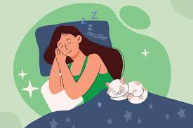
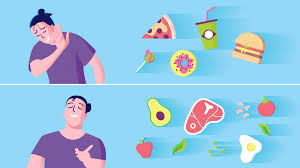

THERE ARE VARIOUS WAYS OF TAKING CARE OF OUR HEALTH
1. When you don't get
enough sleep, you may be irritable,
emotional, and have trouble focusing.

2. Eat a healthy
diet. Eat a combination of different foods,
including fruit, vegetables, legumes,
nuts and whole grains.

3. Exercise or workout is physical activity
that enhances or maintains fitness and overall health.